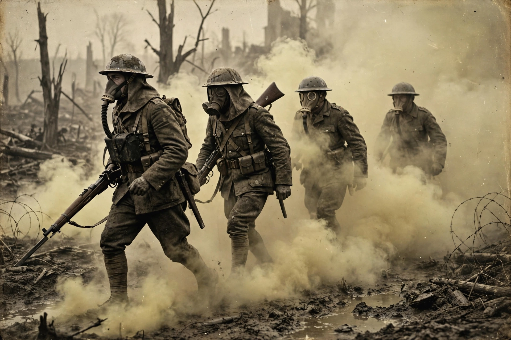

| Chemical warfare | |
|---|---|
 | |
| Agents | Nerve, blister, choking, blood, riot-control |
| First large-scale use | Second Battle of Ypres, 1915 |
| Key treaties | Geneva Protocol (1925); Chemical Weapons Convention (1993) |
| Supervisory body | OPCW |
Chemical warfare (CW) involves using the toxic properties of chemical substances as weapons. This type of warfare is distinct from nuclear warfare, biological warfare and radiological warfare, which together make up CBRN, the military acronym for chemical, biological, radiological, and nuclear weapons of mass destruction. Chemical warfare depends on specially designed munitions such as shells, bombs and spray tanks to deliver agents onto the battlefield.
Simple forms of chemical warfare have existed since antiquity: poisoned arrows, fumes from burning sulphur, and toxic smokes were all used in the ancient and medieval worlds. Modern chemical warfare began in the First World War, when German forces released chlorine gas at the Second Battle of Ypres on 22 April 1915. The belligerents went on to employ phosgene and mustard gas, and developed gas masks and other protective equipment in response. By the war's end, chemical weapons had caused an estimated 1.3 million casualties, including some 90,000–100,000 deaths.
Between the wars, chemical weapons were used by Italy in Ethiopia and by Japan in China. During the Second World War the major powers stockpiled enormous quantities of agents, including newly discovered nerve agents such as tabun and sarin, but battlefield use in Europe was limited, partly through deterrence. The United States used herbicides such as Agent Orange extensively in the Vietnam War. Iraq used chemical weapons against Iran and against Kurdish civilians at Halabja in 1988. Sarin was released in the Tokyo subway attack of 1995 by the Aum Shinrikyo cult, and the Syrian government was repeatedly accused of chemical attacks during the Syrian civil war.
Chemical agents are classified by their physiological effects. Nerve agents (sarin, VX, Novichok agents) inhibit acetylcholinesterase and are lethal in small doses. Blister agents or vesicants (mustard gas, lewisite) burn skin, eyes and lungs. Choking agents (chlorine, phosgene) damage the respiratory tract. Blood agents (hydrogen cyanide) interfere with cellular respiration. Riot-control agents such as tear gas are intended to be temporarily incapacitating.
The 1925 Geneva Protocol banned the use of chemical weapons in war. The Chemical Weapons Convention (CWC), signed in 1993 and in force since 1997, prohibits the development, production, stockpiling and use of chemical weapons and requires the destruction of existing stockpiles. It is implemented by the Organisation for the Prohibition of Chemical Weapons (OPCW) in The Hague, which received the Nobel Peace Prize in 2013. Declared stockpiles of the major possessor states were reported destroyed by 2023, although undeclared programmes and new uses remain a concern.
Chemical defence combines detection (chemical agent monitors and reconnaissance vehicles), protection (gas masks, protective suits, collective protection in vehicles and shelters), decontamination, and medical countermeasures such as atropine and oxime autoinjectors against nerve agents.
See also: Sarin · Mustard gas · Halabja massacre · Chemical Weapons Convention